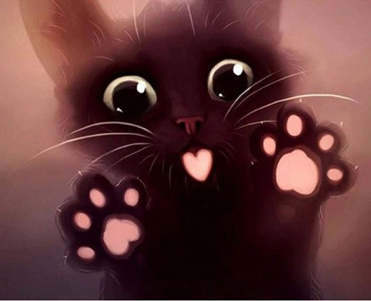

Welcome to the Alleycat BBS

Here you will find links to my programming projects and other stuff that I find interesting.
(
This website is 100% hand-coded HTML.)
Latest News (nothing yet) --
Install Alleycat Player
Alleycat Player was last updated on June 23, 2021 -
get version 4h
Kraker Local Proxy Server was last updated on May 9, 2021 -
get version 3a
8kun Bread Launcher was last updated on May 8, 2021 -
get version 1d
A brief history of the Alleycat BBS
The name comes from an old project I started in 1981 called "Alleycat BBS". This is of nostalgic value to me.
The Alleycat BBS (Bulletin Board System) has disappeared into the fog of history. Nothing can be found about it
in any archive. It was small with just 200 to 300 users. The computer which hosted it was also small. It was an
Ohio Scientific Superboard with 8K of memory (later upgraded), a one-Mhz 6502 CPU and a 300-baud modem with a
home-made phone pickup device. The code was written with a home-brew OS and a very basic machine code assembler.
The service ran for three years and enjoyed a solid reputation. The name "Alleycat" was fondly regarded and, no
doubt, persists in the minds of its former users. It seems only fitting to bring the name back to life.
The term "Bulletin Board System" has fallen out of favour over the years. While the boards of today are certainly
more sophisticated than the boards from the 1980's, there is little difference in terms of the intended function.
Posting messages and replying to messages is a tradition that goes back to the stone age of computers.
Alleycat Player is a browser-based application for extracting and viewing videos from websites.
- Support for over 50 video sources including Youtube, Bitchute, Vimeo, Twitter, Facebook, Periscope, etc.
- Download or play videos or copy the video link for playback on an external player such as VLC or SMPlayer.
- Sources for free movies and TV shows. Many of these sources are unsafe but not with Alleycat Player.
- Over 250 Internet TV channels and Internet Radio. Quick and easy push-button access for channel surfing.
- Advanced video player controller with seek presets, brightness adjustment and more.
This is a work in progress.
 Links to my other Internet sites:
Links to my other Internet sites: